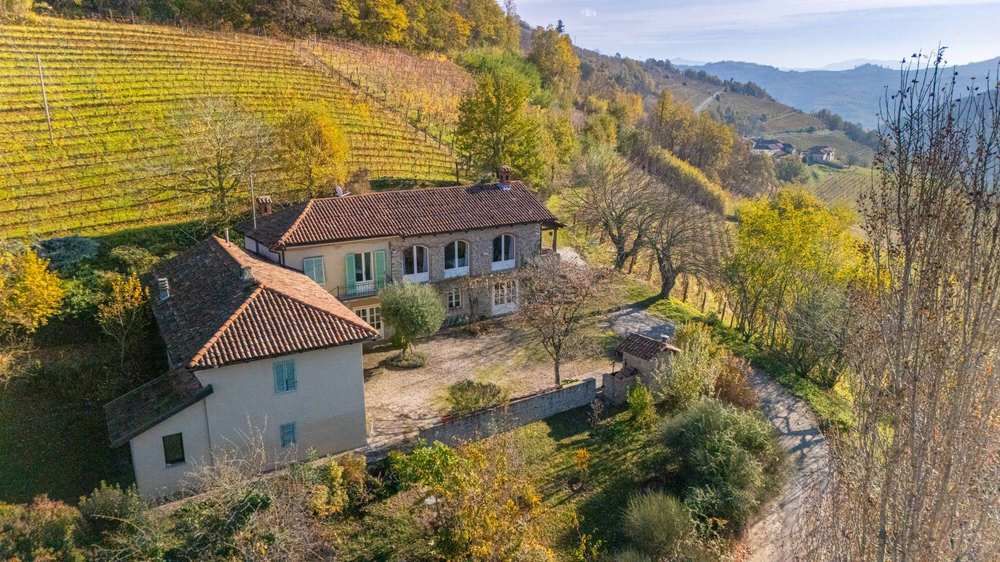

€795.000
Mango (San Donato / Langhe) · Piedmont · Italy
Rare authentic Langhe stone farmhouse near Mango, restored and meticulously maintained, with a covered private pool and big views over UNESCO wine country — exceptional character that punches hard at €795k (owner motivated).
Opened 15 Sep 2026 on Selected Homes Piemonte; asking €795.000; 450 m² / 4 bed / 4 bath / land 69,000 m²; swimming-pool feature; habitable now. Address San Donato, Mango (CN).
Open the listing